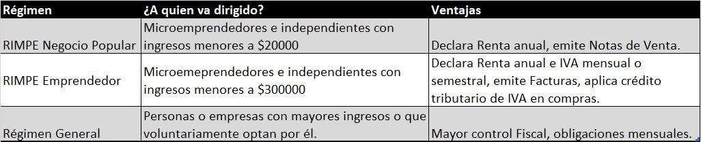

Primeros pasos legales al iniciar un emprendimiento

¿Tienes una gran idea y quieres comenzar tu propio negocio? ¡Excelente decisión! Pero antes de salir corriendo a vender o prestar servicios, es importante que sepas cuáles son los pasos legales que debes seguir para asegurar que tu emprendimiento funcione dentro de la normativa y evites problemas futuros. En este artículo te guiamos paso a paso por lo básico que todo emprendedor debe saber antes de comenzar a operar legalmente en Ecuador.
1. Define Tu Giro o Actividad Económica
Lo primero que debes hacer es definir con claridad qué tipo de actividad económica vas a realizar: ¿Vas a vender productos? ¿Ofrecer servicios? ¿Ambos? El Servicio de Rentas Internas (SRI) clasifica las actividades económicas con códigos llamados CIIU (Clasificación Industrial Internacional Uniforme). Estos códigos son importantes porque definen:
2. Decide si Operarás como Persona Natural o Jurídica
En Ecuador, puedes emprender como:
Persona Natural
Persona Jurídica (Empresa)
3. Regístrate en el SRI y elige tu régimen tributario
Una vez definida tu actividad económica, debes inscribirte en el Servicio de Rentas Internas (SRI). Este paso es fundamental para obtener tu RUC (Registro Único de Contribuyente) y poder emitir facturas electrónicas. Durante el registro, deberás elegir uno de los siguientes regímenes tributarios:
4. Obten tu clave y accede al sistema del SRI
Para gestionar tus obligaciones tributarias y emitir facturas electrónicas, necesitas una clave. Es tu llave digital para acceder al portal del SRI. Puedes solicitarla online desde el portal del SRI o acercándote a una ventanilla.
5. Empieza a emitir facturas electrónicas
Si eres persona natural o jurídica registrada en el SRI, puedes emitir facturas electrónicas válidas legalmente. Esto le da credibilidad a tu negocio y facilita las transacciones con clientes o proveedores. Existen varias formas de emitir facturas:
6. Cumple con tus obligaciones fiscales mensuales
Dependiendo del régimen en el que te encuentres, deberás cumplir con diferentes obligaciones:
Si estás en RIMPE:
Si estás en Régimen General:
7. Considera seguros y permisos adicionales
Según el tipo de negocio que tengas, podrías necesitar algunos permisos especiales:
Además, considera adquirir un seguro para tu inventario o equipo si corresponde.
8. Promueve tu marca, pero respeta la ley
Una vez que tienes todo lo legal listo, es momento de promocionar tu emprendimiento. Sin embargo, recuerda: